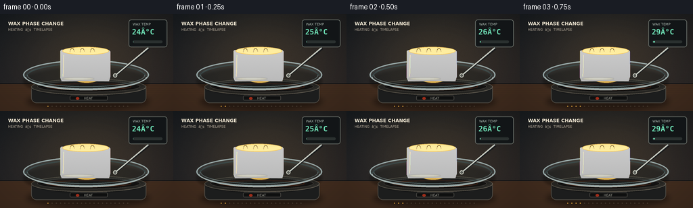
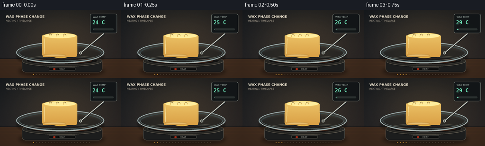
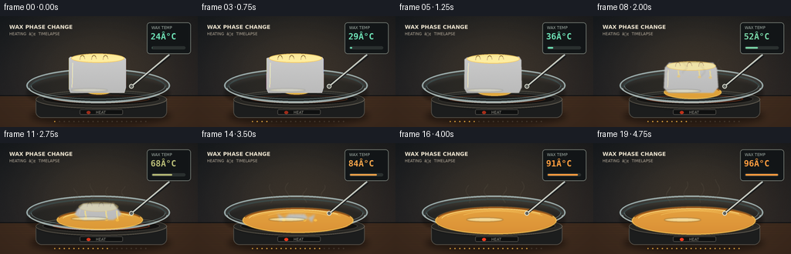
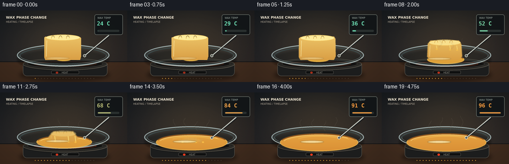

CODING AGENTS AS PIXEL WORLD MODELS
traex/GPT-5.6-Sol · phygen_100
点击播放 · 原生 RGB 像素
逐轮保存的候选
回放视频、检查图与代码变化。
每份候选均可单独播放。实际图片检查记录在下方工具轨迹中。
候选 01播放与检查图
点击播放 · 原生 RGB 像素


展开代码变化
--- 上一保存版本
+++ 本次保存版本
@@ -0,0 +1,260 @@
+from pathlib import Path
+import math
+import numpy as np
+import cv2
+from PIL import Image, ImageDraw, ImageFont, ImageFilter
+import artifact_io
+
+W,H,N = 256,144,20
+S=4
+WW,HH=W*S,H*S
+ROOT=Path(__file__).resolve().parent
+
+try:
+ FONT_B = ImageFont.truetype('/usr/share/fonts/truetype/dejavu/DejaVuSans-Bold.ttf', 7*S)
+ FONT_S = ImageFont.truetype('/usr/share/fonts/truetype/dejavu/DejaVuSans.ttf', 5*S)
+ FONT_DIG = ImageFont.truetype('/usr/share/fonts/truetype/dejavu/DejaVuSansMono-Bold.ttf', 11*S)
+except:
+ FONT_B=FONT_S=FONT_DIG=None
+
+def ease(x):
+ x=np.clip(x,0,1); return x*x*(3-2*x)
+
+def mask_ellipse(box, blur=0):
+ m=Image.new('L',(WW,HH),0); d=ImageDraw.Draw(m)
+ d.ellipse(tuple(int(v*S) for v in box),fill=255)
+ if blur: m=m.filter(ImageFilter.GaussianBlur(blur*S))
+ return m
+
+def rgba_layer(): return Image.new('RGBA',(WW,HH),(0,0,0,0))
+
+def composite(base, layer): return Image.alpha_composite(base,layer)
+
+def ellipse_layer(box, fill, outline=None, width=1, blur=0):
+ L=rgba_layer(); d=ImageDraw.Draw(L)
+ b=tuple(int(v*S) for v in box)
+ d.ellipse(b,fill=fill,outline=outline,width=max(1,int(width*S)))
+ if blur: L=L.filter(ImageFilter.GaussianBlur(blur*S))
+ return L
+
+def polygon_layer(points, fill, blur=0):
+ L=rgba_layer(); d=ImageDraw.Draw(L)
+ d.polygon([(int(x*S),int(y*S)) for x,y in points],fill=fill)
+ if blur:L=L.filter(ImageFilter.GaussianBlur(blur*S))
+ return L
+
+def gradient_fill(mask, top, bottom, bbox=None, noise=0, seed=1):
+ y=np.linspace(0,1,HH)[:,None,None]
+ a=np.array(top,dtype=float)[None,None,:]
+ b=np.array(bottom,dtype=float)[None,None,:]
+ arr=np.tile(a*(1-y)+b*y,(1,WW,1))
+ if noise:
+ rng=np.random.default_rng(seed)
+ arr += rng.normal(0,noise,(HH,WW,1))
+ arr=np.clip(arr,0,255).astype(np.uint8)
+ im=Image.fromarray(arr,'RGB').convert('RGBA'); im.putalpha(mask)
+ return im
+
+def draw_scene(i):
+ t=i/(N-1)
+ # phase change begins slowly and accelerates through the middle
+ p=ease((t-0.10)/0.82)
+ temp=24 + 72*ease(t)
+
+ # cinematic laboratory backdrop: dark wall and warm wooden bench
+ yy=np.arange(HH)[:,None]
+ xx=np.arange(WW)[None,:]
+ wall=np.zeros((HH,WW,3),dtype=np.float32)
+ wall[:,:,0]=22 + 16*(yy/HH) + 7*(xx/WW)
+ wall[:,:,1]=27 + 10*(yy/HH) + 3*(xx/WW)
+ wall[:,:,2]=32 + 8*(yy/HH)
+ # broad warm light centered over specimen
+ glow=np.exp(-(((xx-128*S)/(105*S))**2+((yy-63*S)/(78*S))**2))
+ wall[:,:,0]+=25*glow; wall[:,:,1]+=17*glow; wall[:,:,2]+=6*glow
+ rng=np.random.default_rng(789)
+ grain=rng.normal(0,1.5,(HH,WW,1))
+ wall=np.clip(wall+grain,0,255).astype(np.uint8)
+ base=Image.fromarray(wall,'RGB').convert('RGBA')
+ d=ImageDraw.Draw(base)
+
+ # wall seam and bench, perspective grain
+ d.line((0,103*S,WW,103*S),fill=(13,15,17,255),width=S)
+ d.rectangle((0,104*S,WW,HH),fill=(66,45,31,255))
+ for k in range(13):
+ y=(108+k*3.1)*S
+ col=(85+int(7*math.sin(k)),56+int(4*math.sin(k)),37,100)
+ d.line((0,int(y),WW,int(y+0.5*S*math.sin(k))),fill=col,width=max(1,S//2))
+ # background vignette
+ vig=np.sqrt(((xx-128*S)/(170*S))**2+((yy-72*S)/(112*S))**2)
+ alpha=np.clip((vig-.38)*78,0,70).astype(np.uint8)
+ v=np.zeros((HH,WW,4),dtype=np.uint8); v[:,:,:3]=0; v[:,:,3]=alpha
+ base=composite(base,Image.fromarray(v,'RGBA'))
+
+ # unobtrusive title, reinforces timelapse semantics
+ d=ImageDraw.Draw(base)
+ d.text((12*S,10*S),'WAX PHASE CHANGE',font=FONT_B,fill=(235,226,206,220))
+ d.text((12*S,20*S),'HEATING ⢠TIMELAPSE',font=FONT_S,fill=(174,164,148,200))
+
+ # digital temperature instrument, fixed throughout
+ panel=rgba_layer(); pd=ImageDraw.Draw(panel)
+ pd.rounded_rectangle((190*S,8*S,247*S,49*S),radius=4*S,fill=(17,21,23,245),outline=(103,109,103,255),width=S)
+ pd.text((196*S,12*S),'WAX TEMP',font=FONT_S,fill=(164,177,169,255))
+ reading=f'{int(round(temp)):02d}°C'
+ # changing color moves from cool green to hot amber/red
+ hot=ease((temp-42)/52)
+ rc=(int(108+147*hot),int(220-64*hot),int(178-116*hot),255)
+ pd.text((195*S,20*S),reading,font=FONT_DIG,fill=rc)
+ pd.rounded_rectangle((196*S,39*S,240*S,43*S),radius=2*S,fill=(42,48,47,255))
+ fillx=(197 + 42*(temp-24)/72)*S
+ pd.rounded_rectangle((197*S,40*S,int(fillx),42*S),radius=S,fill=rc)
+ base=composite(base,panel)
+
+ # soft shadow under appliance
+ base=composite(base,ellipse_layer((39,116,221,143),(0,0,0,105),blur=4))
+
+ # electric hotplate cylindrical body
+ body=rgba_layer(); bd=ImageDraw.Draw(body)
+ bd.rounded_rectangle((46*S,104*S,216*S,132*S),radius=8*S,fill=(28,29,29,255),outline=(79,75,68,255),width=S)
+ bd.ellipse((46*S,96*S,216*S,120*S),fill=(50,49,45,255),outline=(114,107,94,255),width=S)
+ bd.ellipse((55*S,99*S,207*S,116*S),fill=(24,24,23,255),outline=(83,81,75,255),width=S)
+ # increasing red coil glow
+ coil_a=int(35+130*p)
+ bd.ellipse((68*S,102*S,194*S,113*S),outline=(224,68,28,coil_a),width=max(S,2*S))
+ bd.rounded_rectangle((103*S,121*S,159*S,128*S),radius=2*S,fill=(15,16,16,255),outline=(70,69,65,255),width=S)
+ bd.ellipse((112*S,123*S,117*S,127*S),fill=(255,59,30,int(140+110*p)))
+ bd.text((124*S,122*S),'HEAT',font=FONT_S,fill=(145,144,135,255))
+ base=composite(base,body)
+
+ # glass dish bottom and inner shadow
+ base=composite(base,ellipse_layer((34,78,220,121),(8,7,5,85),blur=1.8))
+ dish=rgba_layer(); dd=ImageDraw.Draw(dish)
+ dd.ellipse((34*S,68*S,220*S,112*S),fill=(154,187,190,25),outline=(198,224,224,175),width=2*S)
+ dd.ellipse((40*S,73*S,214*S,108*S),fill=(101,128,126,18),outline=(153,184,184,130),width=S)
+ dd.arc((37*S,70*S,217*S,113*S),5,175,fill=(235,250,245,180),width=S)
+ dd.arc((37*S,72*S,217*S,116*S),185,352,fill=(64,91,92,145),width=2*S)
+ base=composite(base,dish)
+
+ # amber molten pool grows continuously; slightly asymmetric as gravity spreads wax
+ prx=15 + 65*p
+ pry=3.5 + 14.5*p
+ pcx=128 + 2.0*p
+ pcy=98 + 2.5*p
+ poolmask=mask_ellipse((pcx-prx,pcy-pry,pcx+prx,pcy+pry),blur=.65)
+ # molten wax becomes deeper amber and translucent as it heats
+ top=(255,int(220-27*p),int(105-37*p),245)
+ bot=(201,int(121+13*p),28,245)
+ # custom warm vertical gradient
+ arr=np.zeros((HH,WW,4),dtype=np.uint8)
+ yn=np.arange(HH)[:,None]/HH
+ arr[:,:,0]=np.clip(255-45*yn,0,255)
+ arr[:,:,1]=np.clip(220-75*yn-15*p,0,255)
+ arr[:,:,2]=np.clip(91-46*yn,0,255)
+ arr[:,:,3]=np.array(poolmask)
+ base=composite(base,Image.fromarray(arr,'RGBA'))
+ # pool edge and specular meniscus
+ poolrim=rgba_layer(); rd=ImageDraw.Draw(poolrim)
+ bb=tuple(int(v*S) for v in (pcx-prx,pcy-pry,pcx+prx,pcy+pry))
+ rd.ellipse(bb,outline=(255,207,89,210),width=S)
+ rd.arc(bb,196,340,fill=(137,69,17,190),width=2*S)
+ if pry > 5:
+ rd.arc((int((pcx-prx+7)*S),int((pcy-pry+2)*S),int((pcx+prx-9)*S),int((pcy+pry-3)*S)),190,326,fill=(255,238,153,185),width=S)
+ # subtle convection rings appear in molten stage
+ if p>.38:
+ for q in range(2):
+ inset=(11+q*17)*p
+ rb=(int((pcx-prx+inset)*S),int((pcy-pry+4+q)*S),int((pcx+prx-inset)*S),int((pcy+pry-5-q)*S))
+ if rb[2]>rb[0]: rd.arc(rb,200+15*q,333-8*q,fill=(255,219,112,int(50+50*p)),width=S)
+ base=composite(base,poolrim)
+
+ # remaining solid wax: tall, crisp ingot slowly rounds, slumps, then vanishes
+ remain=max(0.0,1-ease((p-.03)/.91))
+ if remain>0.015:
+ h=7 + 40*(remain**0.82)
+ half=20 + 17*(remain**0.55)
+ cx=126 + 1.5*p
+ bottom=99.5
+ topy=bottom-h
+ rounding=2+10*p
+ # organic slumping silhouette; initial near-rectangular block
+ pts=[
+ (cx-half+rounding,bottom),
+ (cx-half-2.5*p,bottom-5-3*p),
+ (cx-half+1.5*p,topy+rounding),
+ (cx-half+rounding+2*p,topy+1.3*math.sin(i*.55)),
+ (cx+half-rounding,topy+1.1*math.cos(i*.44)),
+ (cx+half-1.7*p,topy+rounding+1),
+ (cx+half+3*p,bottom-7),
+ (cx+half-rounding,bottom)
+ ]
+ mm=Image.new('L',(WW,HH),0); md=ImageDraw.Draw(mm)
+ md.polygon([(int(x*S),int(y*S)) for x,y in pts],fill=255)
+ # round the material boundary progressively
+ if p>0.08: mm=mm.filter(ImageFilter.GaussianBlur((.25+1.15*p)*S))
+ base=composite(base,gradient_fill(mm,(255,233,139,255),(201,126,38,255),noise=.7,seed=45))
+ details=rgba_layer(); sd=ImageDraw.Draw(details)
+ # top face for block/mound
+ topbox=((cx-half+3)*S,(topy-4+3*p)*S,(cx+half-2)*S,(topy+8+4*p)*S)
+ sd.ellipse(tuple(int(v) for v in topbox),fill=(255,238,158,int(235*remain+15)),outline=(246,202,99,int(220*remain+20)),width=S)
+ # side shading, drips and characteristic solid ridges fade on melting
+ sidea=int(185*remain)
+ sd.line(((cx-half+5)*S,(topy+8)*S,(cx-half+4)*S,(bottom-7)*S),fill=(255,246,185,sidea),width=S)
+ for k in range(3):
+ gx=(cx-half+14+k*15)*S
+ sd.arc((int(gx),int((topy-2)*S),int(gx+7*S),int((topy+10)*S)),180,352,fill=(211,157,64,int(145*remain)),width=S)
+ # descending glossy melt rivulets
+ if p>.15:
+ for k,off in enumerate((-17,10,24)):
+ length=(4+13*p*(.7+.2*k))*S
+ x=(cx+off)*S
+ sd.line((int(x),int((topy+9)*S),int(x+1.5*S),int(min(bottom*S,(topy+9)*S+length))),fill=(255,229,124,int(90+110*p)),width=max(S,2*S))
+ sd.ellipse((int(x-S),int(min(bottom*S,(topy+9)*S+length)-S),int(x+3*S),int(min(bottom*S,(topy+9)*S+length)+2*S)),fill=(255,201,75,int(80+120*p)))
+ base=composite(base,details)
+
+ # liquid surface pin highlights, strongest after solid is gone
+ hi=rgba_layer(); hd=ImageDraw.Draw(hi)
+ hd.ellipse((92*S,int((94+3*p)*S),139*S,int((98+4*p)*S)),fill=(255,246,185,int(80+90*p)))
+ hd.ellipse((102*S,int((94.6+3*p)*S),130*S,int((96.3+3*p)*S)),fill=(255,255,222,int(70+90*p)))
+ base=composite(base,hi.filter(ImageFilter.GaussianBlur(.6*S)))
+
+ # probe placed in wax; its metallic highlight and location make reading physically grounded
+ probe=rgba_layer(); qd=ImageDraw.Draw(probe)
+ qd.line((220*S,51*S,171*S,90*S),fill=(24,25,26,230),width=4*S)
+ qd.line((219*S,50*S,170*S,91*S),fill=(181,190,185,255),width=2*S)
+ qd.line((217*S,51*S,170*S,91*S),fill=(238,240,224,210),width=S)
+ qd.ellipse((167*S,88*S,173*S,94*S),fill=(93,96,91,255),outline=(232,235,221,230),width=S)
+ base=composite(base,probe)
+
+ # heat shimmer / vapor curls increase with temperature; restrained and semi-transparent
+ curls=rgba_layer(); cd=ImageDraw.Draw(curls)
+ if p>.12:
+ for k in range(4):
+ x0=(96+k*22 + 2.0*math.sin(i*.7+k))*S
+ rise=(10+15*p+3*math.sin(i*.6+k))*S
+ y0=(78-4*(k%2))*S
+ pts=[]
+ for z in range(16):
+ u=z/15
+ x=x0 + (2.7*S*math.sin(u*math.pi*2 + i*.42+k))
+ y=y0-rise*u
+ pts.append((int(x),int(y)))
+ cd.line(pts,fill=(255,235,198,int(22+70*p)),width=S)
+ curls=curls.filter(ImageFilter.GaussianBlur(.8*S))
+ base=composite(base,curls)
+
+ # tiny elapsed-time marker dots (not a hard cut timeline)
+ marker=rgba_layer(); mk=ImageDraw.Draw(marker)
+ for k in range(N):
+ c=(243,178,65,210) if k<=i else (112,103,88,90)
+ x=(70+k*6.2)*S
+ mk.ellipse((int(x),136*S,int(x+1.7*S),int(137.7*S)),fill=c)
+ base=composite(base,marker)
+
+ out=base.convert('RGB').resize((W,H),Image.Resampling.LANCZOS)
+ return np.asarray(out,dtype=np.uint8)
+
+def main():
+ frames=np.stack([draw_scene(i) for i in range(N)])
+ artifact_io.save(frames,ROOT)
+ print('saved',frames.shape,frames.dtype)
+
+if __name__=='__main__': main()
候选 02播放与检查图
点击播放 · 原生 RGB 像素


展开代码变化
--- 上一保存版本
+++ 本次保存版本
@@ -45,8 +45,8 @@
def gradient_fill(mask, top, bottom, bbox=None, noise=0, seed=1):
y=np.linspace(0,1,HH)[:,None,None]
- a=np.array(top,dtype=float)[None,None,:]
- b=np.array(bottom,dtype=float)[None,None,:]
+ a=np.array(top[:3],dtype=float)[None,None,:]
+ b=np.array(bottom[:3],dtype=float)[None,None,:]
arr=np.tile(a*(1-y)+b*y,(1,WW,1))
if noise:
rng=np.random.default_rng(seed)
@@ -93,13 +93,13 @@
# unobtrusive title, reinforces timelapse semantics
d=ImageDraw.Draw(base)
d.text((12*S,10*S),'WAX PHASE CHANGE',font=FONT_B,fill=(235,226,206,220))
- d.text((12*S,20*S),'HEATING ⢠TIMELAPSE',font=FONT_S,fill=(174,164,148,200))
+ d.text((12*S,20*S),'HEATING / TIMELAPSE',font=FONT_S,fill=(174,164,148,200))
# digital temperature instrument, fixed throughout
panel=rgba_layer(); pd=ImageDraw.Draw(panel)
pd.rounded_rectangle((190*S,8*S,247*S,49*S),radius=4*S,fill=(17,21,23,245),outline=(103,109,103,255),width=S)
pd.text((196*S,12*S),'WAX TEMP',font=FONT_S,fill=(164,177,169,255))
- reading=f'{int(round(temp)):02d}°C'
+ reading=f'{int(round(temp)):02d} C'
# changing color moves from cool green to hot amber/red
hot=ease((temp-42)/52)
rc=(int(108+147*hot),int(220-64*hot),int(178-116*hot),255)
可观测工具轨迹
实际执行的命令与返回图片。
命令 1exit 0
/bin/bash -lc "cat prompt.txt && printf '\\n--- GENERATION_RULES ---\\n' && cat GENERATION_RULES.md && printf '\\n--- TASK_SPEC ---\\n' && cat task_spec.json"
命令 2exit 1
/bin/bash -lc "find . -maxdepth 2 -type f -printf '%p\\n' | sort && printf '\\nTOOLS\\n' && command -v ffmpeg && command -v python3 && python3 - <<'PY' mods=['cv2','numpy','PIL','imageio','moviepy','cairo','moderngl','OpenGL'] for m in mods: try: x=__import__(m); print(m,'OK',getattr(x,'__version__','')) except Exception as e: print(m,'NO') PY"
命令 3exit 0
/bin/bash -lc 'cat artifact_io.py'
命令 4exit 0
/bin/bash -lc 'for x in /usr/bin/ffmpeg /usr/local/bin/ffmpeg; do test -x "$x" && echo "$x"; done; python3 - <<'"'PY' mods=['cv2','numpy','PIL','imageio','moviepy','cairo','moderngl','OpenGL'] for m in mods: try: x=__import__(m); print(m,'OK',getattr(x,'__version__','')) except Exception as e: print(m,'NO',type(e).__name__) PY"
命令 5exit 2
/bin/bash -lc "cat > generate.py <<'PY'
from pathlib import Path
import math
import numpy as np
import cv2
from PIL import Image, ImageDraw, ImageFont, ImageFilter
import artifact_io
W,H,N = 256,144,20
S=4
WW,HH=W*S,H*S
ROOT=Path(__file__).resolve().parent
try:
FONT_B = ImageFont.truetype('/usr/share/fonts/truetype/dejavu/DejaVuSans-Bold.ttf', 7*S)
FONT_S = ImageFont.truetype('/usr/share/fonts/truetype/dejavu/DejaVuSans.ttf', 5*S)
FONT_DIG = ImageFont.truetype('/usr/share/fonts/truetype/dejavu/DejaVuSansMono-Bold.ttf', 11*S)
except:
FONT_B=FONT_S=FONT_DIG=None
def ease(x):
x=np.clip(x,0,1); return x*x*(3-2*x)
def mask_ellipse(box, blur=0):
m=Image.new('L',(WW,HH),0); d=ImageDraw.Draw(m)
d.ellipse(tuple(int(v*S) for v in box),fill=255)
if blur: m=m.filter(ImageFilter.GaussianBlur(blur*S))
return m
def rgba_layer(): return Image.new('RGBA',(WW,HH),(0,0,0,0))
def composite(base, layer): return Image.alpha_composite(base,layer)
def ellipse_layer(box, fill, outline=None, width=1, blur=0):
L=rgba_layer(); d=ImageDraw.Draw(L)
b=tuple(int(v*S) for v in box)
d.ellipse(b,fill=fill,outline=outline,width=max(1,int(width*S)))
if blur: L=L.filter(ImageFilter.GaussianBlur(blur*S))
return L
def polygon_layer(points, fill, blur=0):
L=rgba_layer(); d=ImageDraw.Draw(L)
d.polygon([(int(x*S),int(y*S)) for x,y in points],fill=fill)
if blur:L=L.filter(ImageFilter.GaussianBlur(blur*S))
return L
def gradient_fill(mask, top, bottom, bbox=None, noise=0, seed=1):
y=np.linspace(0,1,HH)[:,None,None]
a=np.array(top,dtype=float)[None,None,:]
b=np.array(bottom,dtype=float)[None,None,:]
arr=np.tile(a*(1-y)+b*y,(1,WW,1))
if noise:
rng=np.random.default_rng(seed)
arr += rng.normal(0,noise,(HH,WW,1))
arr=np.clip(arr,0,255).astype(np.uint8)
im=Image.fromarray(arr,'RGB').convert('RGBA'); im.putalpha(mask)
return im
def draw_scene(i):
t=i/(N-1)
# phase change begins slowly and accelerates through the middle
p=ease((t-0.10)/0.82)
temp=24 + 72*ease(t)
# cinematic laboratory backdrop: dark wall and warm wooden bench
yy=np.arange(HH)[:,None]
xx=np.arange(WW)[None,:]
wall=np.zeros((HH,WW,3),dtype=np.float32)
wall[:,:,0]=22 + 16*(yy/HH) + 7*(xx/WW)
wall[:,:,1]=27 + 10*(yy/HH) + 3*(xx/WW)
wall[:,:,2]=32 + 8*(yy/HH)
# broad warm light centered over specimen
glow=np.exp(-(((xx-128*S)/(105*S))**2+((yy-63*S)/(78*S))**2))
wall[:,:,0]+=25*glow; wall[:,:,1]+=17*glow; wall[:,:,2]+=6*glow
rng=np.random.default_rng(789)
grain=rng.normal(0,1.5,(HH,WW,1))
wall=np.clip(wall+grain,0,255).astype(np.uint8)
base=Image.fromarray(wall,'RGB').convert('RGBA')
d=ImageDraw.Draw(base)
# wall seam and bench, perspective grain
d.line((0,103*S,WW,103*S),fill=(13,15,17,255),width=S)
d.rectangle((0,104*S,WW,HH),fill=(66,45,31,255))
for k in range(13):
y=(108+k*3.1)*S
col=(85+int(7*math.sin(k)),56+int(4*math.sin(k)),37,100)
d.line((0,int(y),WW,int(y+0.5*S*math.sin(k))),fill=col,width=max(1,S//2))
# background vignette
vig=np.sqrt(((xx-128*S)/(170*S))**2+((yy-72*S)/(112*S))**2)
alpha=np.clip((vig-.38)*78,0,70).astype(np.uint8)
v=np.zeros((HH,WW,4),dtype=np.uint8); v[:,:,:3]=0; v[:,:,3]=alpha
base=composite(base,Image.fromarray(v,'RGBA'))
# unobtrusive title, reinforces timelapse semantics
d=ImageDraw.Draw(base)
d.text((12*S,10*S),'WAX PHASE CHANGE',font=FONT_B,fill=(235,226,206,220))
d.text((12*S,20*S),'HEATING ⢠TIMELAPSE',font=FONT_S,fill=(174,164,148,200))
# digital temperature instrument, fixed throughout
panel=rgba_layer(); pd=ImageDraw.Draw(panel)
pd.rounded_rectangle((190*S,8*S,247*S,49*S),radius=4*S,fill=(17,21,23,245),outline=(103,109,103,255),width=S)
pd.text((196*S,12*S),'WAX TEMP',font=FONT_S,fill=(164,177,169,255))
reading=f'{int(round(temp)):02d}°C'
# changing color moves from cool green to hot amber/red
hot=ease((temp-42)/52)
rc=(int(108+147*hot),int(220-64*hot),int(178-116*hot),255)
pd.text((195*S,20*S),reading,font=FONT_DIG,fill=rc)
pd.rounded_rectangle((196*S,39*S,240*S,43*S),radius=2*S,fill=(42,48,47,255))
fillx=(197 + 42*(temp-24)/72)*S
pd.rounded_rectangle((197*S,40*S,int(fillx),42*S),radius=S,fill=rc)
base=composite(base,panel)
# soft shadow under appliance
base=composite(base,ellipse_layer((39,116,221,143),(0,0,0,105),blur=4))
# electric hotplate cylindrical body
body=rgba_layer(); bd=ImageDraw.Draw(body)
bd.rounded_rectangle((46*S,104*S,216*S,132*S),radius=8*S,fill=(28,29,29,255),outline=(79,75,68,255),width=S)
bd.ellipse((46*S,96*S,216*S,120*S),fill=(50,49,45,255),outline=(114,107,94,255),width=S)
bd.ellipse((55*S,99*S,207*S,116*S),fill=(24,24,23,255),outline=(83,81,75,255),width=S)
# increasing red coil glow
coil_a=int(35+130*p)
bd.ellipse((68*S,102*S,194*S,113*S),outline=(224,68,28,coil_a),width=max(S,2*S))
bd.rounded_rectangle((103*S,121*S,159*S,128*S),radius=2*S,fill=(15,16,16,255),outline=(70,69,65,255),width=S)
bd.ellipse((112*S,123*S,117*S,127*S),fill=(255,59,30,int(140+110*p)))
bd.text((124*S,122*S),'HEAT',font=FONT_S,fill=(145,144,135,255))
base=composite(base,body)
# glass dish bottom and inner shadow
base=composite(base,ellipse_layer((34,78,220,121),(8,7,5,85),blur=1.8))
dish=rgba_layer(); dd=ImageDraw.Draw(dish)
dd.ellipse((34*S,68*S,220*S,112*S),fill=(154,187,190,25),outline=(198,224,224,175),width=2*S)
dd.ellipse((40*S,73*S,214*S,108*S),fill=(101,128,126,18),outline=(153,184,184,130),width=S)
dd.arc((37*S,70*S,217*S,113*S),5,175,fill=(235,250,245,180),width=S)
dd.arc((37*S,72*S,217*S,116*S),185,352,fill=(64,91,92,145),width=2*S)
base=composite(base,dish)
# amber molten pool grows continuously; slightly asymmetric as gravity spreads wax
prx=15 + 65*p
pry=3.5 + 14.5*p
pcx=128 + 2.0*p
pcy=98 + 2.5*p
poolmask=mask_ellipse((pcx-prx,pcy-pry,pcx+prx,pcy+pry),blur=.65)
# molten wax becomes deeper amber and translucent as it heats
top=(255,int(220-27*p),int(105-37*p),245)
bot=(201,int(121+13*p),28,245)
# custom warm vertical gradient
arr=np.zeros((HH,WW,4),dtype=np.uint8)
yn=np.arange(HH)[:,None]/HH
arr[:,:,0]=np.clip(255-45*yn,0,255)
arr[:,:,1]=np.clip(220-75*yn-15*p,0,255)
arr[:,:,2]=np.clip(91-46*yn,0,255)
arr[:,:,3]=np.array(poolmask)
base=composite(base,Image.fromarray(arr,'RGBA'))
# pool edge and specular meniscus
poolrim=rgba_layer(); rd=ImageDraw.Draw(poolrim)
bb=tuple(int(v*S) for v in (pcx-prx,pcy-pry,pcx+prx,pcy+pry))
rd.ellipse(bb,outline=(255,207,89,210),width=S)
rd.arc(bb,196,340,fill=(137,69,17,190),width=2*S)
rd.arc((int((pcx-prx+7)*S),int((pcy-pry+2)*S),int((pcx+prx-9)*S),int((pcy+pry-6)*S)),190,326,fill=(255,238,153,185),width=S)
# subtle convection rings appear in molten stage
if p>.38:
for q in range(2):
inset=(11+q*17)*p
rb=(int((pcx-prx+inset)*S),int((pcy-pry+4+q)*S),int((pcx+prx-inset)*S),int((pcy+pry-5-q)*S))
if rb[2]>rb[0]: rd.arc(rb,200+15*q,333-8*q,fill=(255,219,112,int(50+50*p)),width=S)
base=composite(base,poolrim)
# remaining solid wax: tall, crisp ingot slowly rounds, slumps, then vanishes
remain=max(0.0,1-ease((p-.03)/.91))
if remain>0.015:
h=7 + 40*(remain**0.82)
half=20 + 17*(remain**0.55)
cx=126 + 1.5*p
bottom=99.5
topy=bottom-h
rounding=2+10*p
# organic slumping silhouette; initial near-rectangular block
pts=[
(cx-half+rounding,bottom),
(cx-half-2.5*p,bottom-5-3*p),
(cx-half+1.5*p,topy+rounding),
(cx-half+rounding+2*p,topy+1.3*math.sin(i*.55)),
(cx+half-rounding,topy+1.1*math.cos(i*.44)),
(cx+half-1.7*p,topy+rounding+1),
(cx+half+3*p,bottom-7),
(cx+half-rounding,bottom)
]
mm=Image.new('L',(WW,HH),0); md=ImageDraw.Draw(mm)
md.polygon([(int(x*S),int(y*S)) for x,y in pts],fill=255)
# round the material boundary progressively
if p>0.08: mm=mm.filter(ImageFilter.GaussianBlur((.25+1.15*p)*S))
base=composite(base,gradient_fill(mm,(255,233,139,255),(201,126,38,255),noise=.7,seed=45))
details=rgba_layer(); sd=ImageDraw.Draw(details)
# top face for block/mound
topbox=((cx-half+3)*S,(topy-4+3*p)*S,(cx+half-2)*S,(topy+8+4*p)*S)
sd.ellipse(tuple(int(v) for v in topbox),fill=(255,238,158,int(235*remain+15)),outline=(246,202,99,int(220*remain+20)),width=S)
# side shading, drips and characteristic solid ridges fade on melting
sidea=int(185*remain)
sd.line(((cx-half+5)*S,(topy+8)*S,(cx-half+4)*S,(bottom-7)*S),fill=(255,246,185,sidea),width=S)
for k in range(3):
gx=(cx-half+14+k*15)*S
sd.arc((int(gx),int((topy-2)*S),int(gx+7*S),int((topy+10)*S)),180,352,fill=(211,157,64,int(145*remain)),width=S)
# descending glossy melt rivulets
if p>.15:
for k,off in enumerate((-17,10,24)):
length=(4+13*p*(.7+.2*k))*S
x=(cx+off)*S
sd.line((int(x),int((topy+9)*S),int(x+1.5*S),int(min(bottom*S,(topy+9)*S+length))),fill=(255,229,124,int(90+110*p)),width=max(S,2*S))
sd.ellipse((int(x-S),int(min(bottom*S,(topy+9)*S+length)-S),int(x+3*S),int(min(bottom*S,(topy+9)*S+length)+2*S)),fill=(255,201,75,int(80+120*p)))
base=composite(base,details)
# liquid surface pin highlights, strongest after solid is gone
hi=rgba_layer(); hd=ImageDraw.Draw(hi)
hd.ellipse((92*S,int((94+3*p)*S),139*S,int((98+4*p)*S)),fill=(255,246,185,int(80+90*p)))
hd.ellipse((102*S,int((94.6+3*p)*S),130*S,int((96.3+3*p)*S)),fill=(255,255,222,int(70+90*p)))
base=composite(base,hi.filter(ImageFilter.GaussianBlur(.6*S)))
# probe placed in wax; its metallic highlight and location make reading physically grounded
probe=rgba_layer(); qd=ImageDraw.Draw(probe)
qd.line((220*S,51*S,171*S,90*S),fill=(24,25,26,230),width=4*S)
qd.line((219*S,50*S,170*S,91*S),fill=(181,190,185,255),width=2*S)
qd.line((217*S,51*S,170*S,91*S),fill=(238,240,224,210),width=S)
qd.ellipse((167*S,88*S,173*S,94*S),fill=(93,96,91,255),outline=(232,235,221,230),width=S)
base=composite(base,probe)
# heat shimmer / vapor curls increase with temperature; restrained and semi-transparent
curls=rgba_layer(); cd=ImageDraw.Draw(curls)
if p>.12:
for k in range(4):
x0=(96+k*22 + 2.0*math.sin(i*.7+k))*S
rise=(10+15*p+3*math.sin(i*.6+k))*S
y0=(78-4*(k%2))*S
pts=[]
for z in range(16):
u=z/15
x=x0 + (2.7*S*math.sin(u*math.pi*2 + i*.42+k))
y=y0-rise*u
pts.append((int(x),int(y)))
cd.line(pts,fill=(255,235,198,int(22+70*p)),width=S)
curls=curls.filter(ImageFilter.GaussianBlur(.8*S))
base=composite(base,curls)
# tiny elapsed-time marker dots (not a hard cut timeline)
marker=rgba_layer(); mk=ImageDraw.Draw(marker)
for k in range(N):
c=(243,178,65,210) if k<=i else (112,103,88,90)
x=(70+k*6.2)*S
mk.ellipse((int(x),136*S,int(x+1.7*S),int(137.7*S)),fill=c)
base=composite(base,marker)
out=base.convert('RGB').resize((W,H),Image.Resampling.LANCZOS)
return np.asarray(out,dtype=np.uint8)
def main():
frames=np.stack([draw_scene(i) for i in range(N)])
artifact_io.save(frames,ROOT)
print('saved',frames.shape,frames.dtype)
if __name__=='__main__': main()
PY
python3 generate.py
ls -lh pixels.npz inspection.png transition_check.png index.html frames/00.png frames/19.png"命令 6exit 0
/bin/bash -lc "grep -n \"HEATING\\|reading=\\|rd.arc\" generate.py"
命令 7exit 0
/bin/bash -lc "python3 - <<'PY'
p='generate.py'
s=open(p).read()
s=s.replace(\"'HEATING ⢠TIMELAPSE'\", \"'HEATING / TIMELAPSE'\")
s=s.replace(\"f'{int(round(temp)):02d}ðC'\", \"f'{int(round(temp)):02d} C'\")
s=s.replace(\" rd.arc((int((pcx-prx+7)*S),int((pcy-pry+2)*S),int((pcx+prx-9)*S),int((pcy+pry-6)*S)),190,326,fill=(255,238,153,185),width=S)\\n\", \" if pry > 5:\\n rd.arc((int((pcx-prx+7)*S),int((pcy-pry+2)*S),int((pcx+prx-9)*S),int((pcy+pry-3)*S)),190,326,fill=(255,238,153,185),width=S)\\n\")
open(p,'w').write(s)
PY
python3 generate.py
ls -lh pixels.npz inspection.png transition_check.png index.html frames/00.png frames/19.png"命令 8exit 0
/bin/bash -lc "python3 - <<'PY'
p='generate.py'
s=open(p,encoding='utf-8').read()
s=s.replace(' a=np.array(top,dtype=float)[None,None,:]\\n b=np.array(bottom,dtype=float)[None,None,:]\\n', ' a=np.array(top[:3],dtype=float)[None,None,:]\\n b=np.array(bottom[:3],dtype=float)[None,None,:]\\n')
lines=s.splitlines()
for j,line in enumerate(lines):
if \"d.text((12*S,20*S)\" in line:
lines[j]=\" d.text((12*S,20*S),'HEATING / TIMELAPSE',font=FONT_S,fill=(174,164,148,200))\"
if line.strip().startswith('reading='):
lines[j]=\" reading=f'{int(round(temp)):02d} C'\"
open(p,'w',encoding='utf-8').write('\\n'.join(lines)+'\\n')
PY
python3 generate.py
python3 - <<'PY'
import numpy as np, json
from PIL import Image
from pathlib import Path
z=np.load('pixels.npz')['pixels']
s=json.load(open('task_spec.json'))
assert z.shape==(s['height'],s['width'],s['frames'])
assert len(list(Path('frames').glob('*.png')))==s['frames']
for f in ['frames/00.png','frames/19.png']:
im=np.asarray(Image.open(f)); assert im.shape==(144,256,3) and im.dtype==np.uint8
print('validated pixels',z.shape,'frames',s['frames'])
PY"视觉工具实际返回图片 1

视觉工具实际返回图片 2

保存候选 2 份；完成命令 8 次；可验证图片返回 2 张。原始 API 响应与完整日志保留在本地。